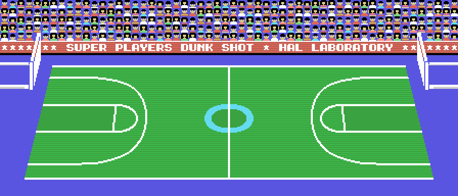
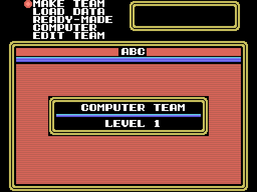
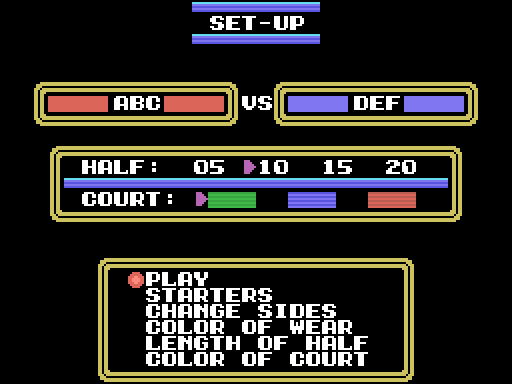
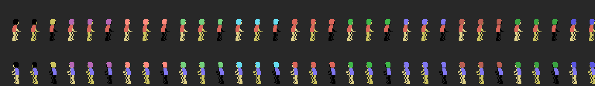
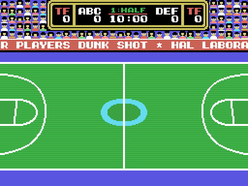

Dunk Shot es baloncesto de tres contra tres visto desde la grada: una pista que mide casi el doble que la pantalla, dos equipos de tres jugadores en pista (de una plantilla de ocho) y un partido a dos mitades de 5, 10, 15 o 20 minutos.

Del título se pasa con espacio al primer menú: SET-UP, LEFT TEAM, RIGHT TEAM y TRADE. Si no se toca nada, a los 1.500 cuadros (0x405E) arranca la demostración.
Las dos pantallas de equipo tienen MAKE TEAM (nombre de tres letras y ocho jugadores de ocho letras), LOAD DATA, READY-MADE, COMPUTER (los ocho equipos de la máquina) y EDIT TEAM, con STARTERS para elegir los tres titulares y SAVE DATA y VERIFY para la cinta. TRADE intercambia jugadores entre los dos equipos.

SET-UP tiene PLAY, STARTERS, CHANGE SIDES, COLOR OF WEAR, LENGTH OF HALF (5, 10, 15 o 20 minutos: 0x73A3 multiplica por 300 segundos) y COLOR OF COURT, las tres pistas. Al arrancar los dos equipos son de la máquina: con PLAY el partido se juega solo.

Un jugador ocupa 29 bytes (0x7E2E devuelve el campo que se le pida): ocho letras de nombre, el aspecto (0-31, una de las 32 parejas de piel y pelo de 0x80E4) y las habilidades, que la pantalla de estadísticas rotula S, J y R. Un equipo son 0xEC bytes: tres letras, el nivel, el color y los ocho jugadores.
Los ocho equipos de la máquina, ELM, JNR, HIG, COL, YUG, ESP, USA y PRO, son los niveles 1 a 8: 0x72CA genera sus jugadores con 30, 20 y 25 puntos más 30 por cada nivel por encima del primero, y el aspecto al azar. Ese bloque de 0xEC bytes es lo que SAVE DATA graba en cinta y lo que TRADE intercambia (0x8201).

Seis jugadores en pista, cada uno con sus dos compañeros fijos (0xBF1E), el balón y la red. La pista entera son 56 columnas (0xB69E); la pantalla enseña 32 y salta de columna en columna (0x5F33, 0x5E7C). Arriba, el marcador: nombres, faltas de equipo (TF), puntos, tiempo y mitad.

La canasta vale 2 dentro de la zona y a media distancia, 3 a cuarenta o más de la canasta y 1 el tiro libre (0x772E); tres segundos en la botella (210 cuadros, 0x76EA) son 3 SECOND.
Las faltas y violaciones que pita el juego son las doce de 0x796F: TRAVELLING, 3, 5, 10 y 30 SECOND, CHARGING, HACKING, HOLDING, PUSHING y BLOCKING, más los dos rótulos del contador. La pantalla de estadísticas lleva, por jugador, FOULS y FATIGUE. Al descanso, HALF TIME; al final, GAME OVER y PUSH ANY KEY (0x8BF3, 0x8C21).
Leído del código (0xB9C3 y 0xBA16): el equipo humano de la izquierda usa el joystick 1 o, si no da nada, los cursores con [ como tiro y RETURN como pase; el de la derecha, el joystick 2 o cuatro teclas de las filas 3 y 5 de la matriz del teclado con TAB y CTRL. El botón 2 del equipo con balón en campo contrario cambia de jugada; el del equipo sin balón cambia de defensor (0x622A, 0x627F). Los menús van con los cursores, espacio y ESC.